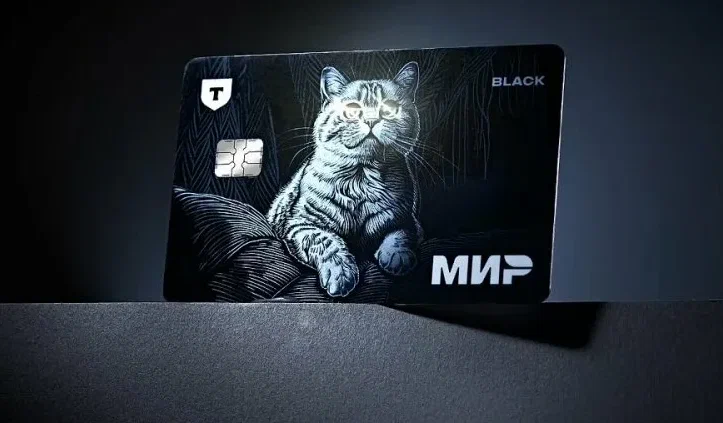
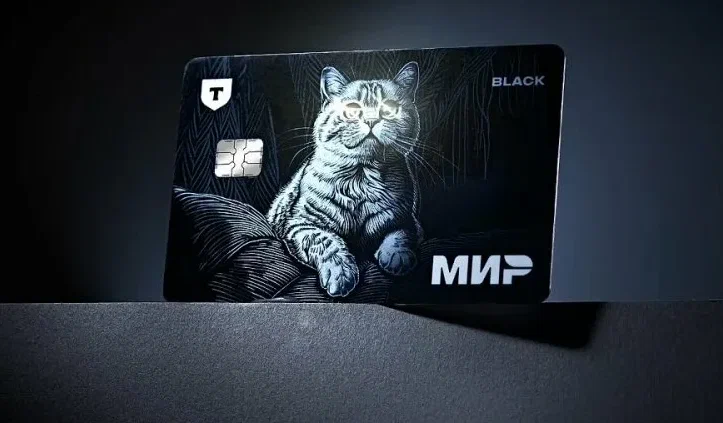
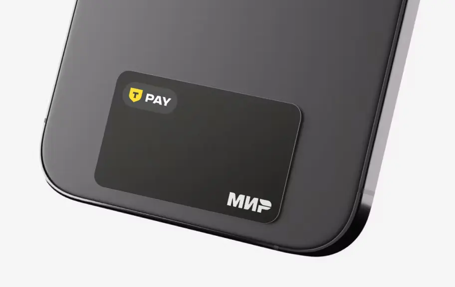
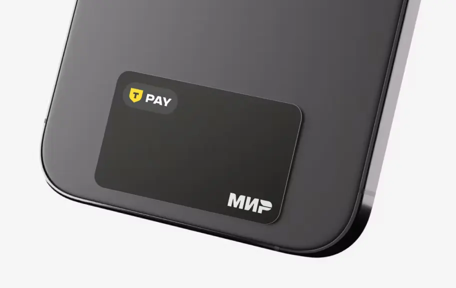
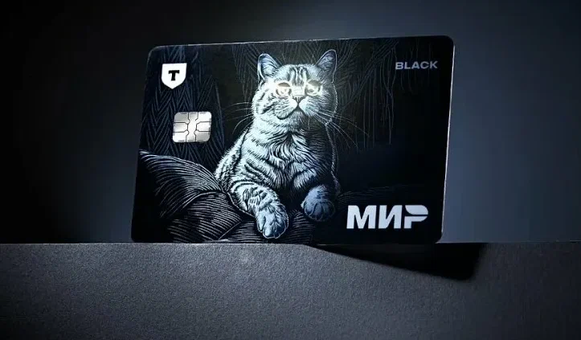
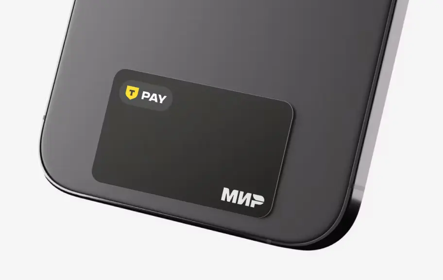

 

«Тинькофф-Банк» являлся крупнейшим в мире онлайн-банком по количеству клиентов на август 2019 года. Занимает 9-е место по размеру активов среди банков в Российской Федерации (на июнь 2024 года — 2,7 трлн рублей). Штаб-квартира банка расположена в Москве. На сентябрь 2020 года «Тинькофф Банк» был третьим среди российских банков в секторе розничных продуктов по востребованности у населения. Клиентами банка являются 50 млн человек (на апрель 2025 года). В октябре 2021 года банк был включён ЦБ России в перечень системно значимых кредитных организаций благодаря росту банка выше среднерыночного показателя и размеру клиентской базы.Индивидуальным предпринимателям и юридическим лицам банк предлагает расчётно-кассовое обслуживание, корпоративные карты, зарплатный проект, торговый и интернет-эквайринг, POS-кредитование, банковские гарантии и кредиты, онлайн-кассы, бесплатный сервис по ведению бухгалтерии и конструкторы сайтов и документов.



Рассрочки без процентов и множество котегорий с повышенным кэшбеком

Быстрые ответы на вопросы и добрые сотрудники

Помощь с организацией бизнеса

Поддержим все ваши интересы
До 2006 года «Химмашбанк» был небольшим кэптивным банком, занимавшимся обслуживанием предприятий из химической и фармацевтической отрасли. В 2006 году этот банк был куплен Олегом Тиньковым и переименован в «Тинькофф кредитные системы». По словам Тинькова, он заинтересовался моделью дистанционного обслуживания американского банка Wells Fargo и монолайнера Capital One, специализирующегося на банковских картах. Вместе с консультантами из Boston Consulting Group он пришёл к выводу, что модель дистанционного кредитного банка может работать и в России. Предприниматель вложил в открытие «банка без отделений» 70 млн долларов США из своего восьмидесятимиллионного состояния.В конце января 2024 года Тинькофф перестал владеть криптовалютным сервисом Aximetria. Доля криптобиржи, ранее принадлежавшая TCS Group, перешла швейцарской консалтинговой компании Red Circle . В феврале 2024 года Тинькофф банк сменил логотип — прежнюю эмблему на основе герба рода Тиньковых заменило жёлтое поле в форме щита с чёрной буквой «Т».
Интерактивные переговорные в офисе Т-Банк В мае 2024 года банк официально запустил платформу «Тинькофф возврат». Бесплатный сервис позволяет оспаривать ошибочные, неудачные или мошеннические транзакции. Платформа работала в тестовом режиме с 2023 года, за это время клиентам было возвращено около пяти миллионов рублей. Интерьер нового офиса на Белорусской 5 июня 2024 года банк провёл ребрендинг и получил название «Т-Банк». Официально сообщалось, что решение о переименовании было связано с необходимостью упрощения имени и объединения всех продуктов лаконичным брендом. Misha, [29 окт. 2025 г., 20:23:31]: О подготовке ребрендинга банк сообщал после того, как Олега Тинькова внесли в реестр иностранных агентов из-за его высказываний против вторжения России в Украину. Олег Тиньков в интервью телеканалу «Дождь» заявил, что банк переименовали из-за давления администрации президента РФ. По его словам, «банк неудачно переименовали: им надо было назваться Z-банк, это было бы намного круче… Z-банк — это отражение сегодняшнего „Тинькофф“». 21 июля 2024 года банк открыл доступ к собственной языковой модели T-lite, имеющей 8 млрд параметров. Подразделение компании по разработке ИИ (T-Bank AI Research) совместно с Центральным университетом создали лабораторию Omut AI для разработки инновационных решений в сфере безопасности ИИ.Горячая линия
+7 916 015 3939
+7 963 650 8981
xehny5ejr0@gmail.com
438562 Гр Москва ул Солнечная 32
| день недели | понедельник | вторник | среда | четверг | пятница |
|---|---|---|---|---|---|
| утро | 10:30-12:00 | 6:00-12:00 | 6:00-12:00 | 6:00-12:00 | 6:30-12:00 |
| обед | 8:00-8:30 | 8:00-8:30 | 8:00-8:30 | 8:00-8:30 | 8:00-8:30 |
| вечер | 12:00-21:30 | 6:00-12:00 | 6:00-12:00 | 6:00-12:00 | 6:30-12:00 |